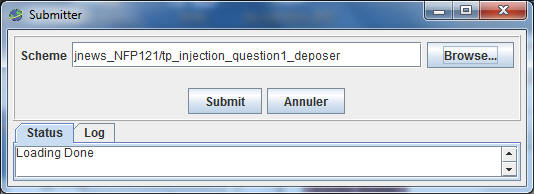
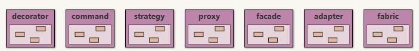

Le framework femtoContainer
Le framework femtoContainerPréambule: lire, étudier l'article de Martin Fowler
http://www.martinfowler.com/articles/injection.html
Ce TP est accompagné d'une séance d'exercices dirigés sur le même thème
cf. ed injection_dependances_IoC
Préambule BlueJ : import de la librairie femtoContainer
- Téléchargez femtoContainer.jar
- Ajouter cette archive à votre projet tp_rules, Menu Outils, item Préférences, onglet Bibliothèques

- Redémarrez BlueJ

- Vérifiez à nouveau Menu Outils, item Préférences, onglet Bibliothèques, l'archive doit être chargée

Cette archive est un projet bluej autonome, celui-ci contient plusieurs exemples dont quelques patrons de conception ainsi qu'une interface graphique d'aide à l'édition des fichiers de configuration, il peut être ouvert avec le tp_injection.
L'exécution de la méthode main de la classe nommée
ConfigurationIHM déclenche une interface graphique qui pourrait
vous être utile pour la réalisation des fichiers de configuration ( interface perfectible...)
Un
exemple de votre choix Proposez un exemple, de votre choix, de l'utilisation de l'injection de dépendances.
Cet exemple doit être accompagné d'une classe de tests unitaires, celui-ci sera intégré à la prochaine version de femtoContainer.
Utilisez JNEWS afin de déposer cet exemple, menu Outils, item submit..., Scheme tp_injection_question1_deposer

 Un
patron et son utilisation
Un
patron et son utilisationProposez deux patrons de conception, un exemple d'utilisation, une classe de tests unitaires.
un patron de votre choix, vous pouvez vous inspirer des patrons présents dans le projet femtoContainer, soit :

- Un autre patron de votre choix en excluant les exemples présents dans femtoContainer
Utiliser JNEWS afin de déposer vos contributions, menu Outils, item submit..., Scheme tp_injection_question2_contribuer

 Usage
du patron ServiceLocator
Usage
du patron ServiceLocatorLes exemples de la question1 et les patrons de la question 2 sont maintenant accessibles via une instance du patron ServiceLocator,
Vérifiez la configuration (./question3/README.TXT) et enrichissez la classe de tests unitaires en conséquence (./question3/ServiceLocatorTests.java)...
N'oubliez pas d'utiliser JNEWS afin de déposer vos contribution, menu Outils, item submit..., Scheme tp_injection_question3_contribuer